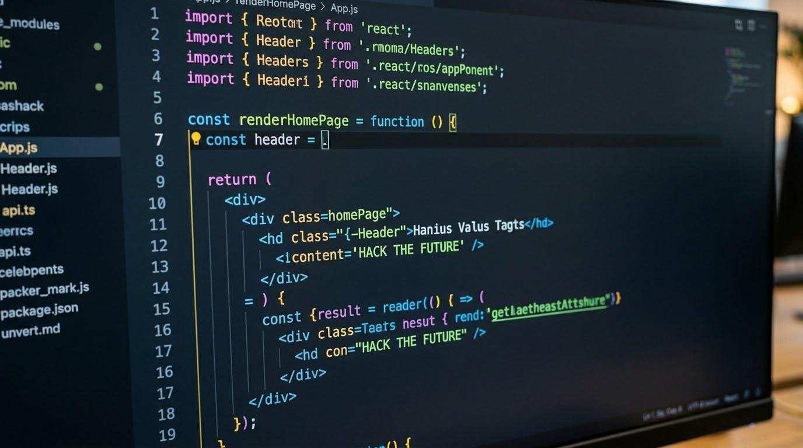

2022
Software Testing
Inizio il mio percorso professionale nel Software Testing, costruendo una solida base nella Quality Assurance, nell'analisi funzionale e nella verifica del comportamento del software.
Costruisco software più affidabile, comprensibile e testabile.
Il mio percorso professionale è nato e si è sviluppato nel mondo del Software Testing, della Quality Assurance, del Backend Testing, delle API e della Test Automation. Negli anni ho imparato a guardare il software non soltanto dal punto di vista del test, ma anche attraverso il codice e la logica che ne determinano il comportamento.
Il mio percorso professionale si è sviluppato principalmente nel mondo del Software Testing, della Quality Assurance e della tecnologia. Nel tempo ho lavorato su attività di functional testing, backend testing, API validation, integration testing, regression testing e test automation.
La curiosità verso il codice è arrivata naturalmente. Mi piace comprendere cosa succede dietro un'interfaccia, come comunica un backend, come funziona un'API e come il software viene costruito. Testing is my profession. Code is my PASSION
Inizio il mio percorso professionale nel Software Testing, costruendo una solida base nella Quality Assurance, nell'analisi funzionale e nella verifica del comportamento del software.
Continuo a lavorare nel Software Testing su applicazioni e progetti complessi, approfondendo attività di backend testing, integration testing, API e verifica dei flussi applicativi.
Approfondisco la Test Automation, la validazione delle API e la costruzione di strategie di test più scalabili, ripetibili e manutenibili.
Continuo il percorso in ambito QA e Software Testing lavorando su piattaforme complesse, moduli, integrazioni, API e processi di regression testing in contesti enterprise.
Oggi continuo a lavorare nel mondo Software Testing, QA Automation, API e integrazione. Parallelamente sto approfondendo sempre di più lo sviluppo software, la programmazione e la costruzione di applicazioni. Non ho ancora lavorato professionalmente come Software Developer: sviluppare codice è una mia passione e una direzione che sto coltivando attraverso studio e progetti.
Il mio lavoro professionale appartiene al mondo della Quality Assurance, del Software Testing, dell'Automation e delle API. Allo stesso tempo ho sviluppato una forte passione per il codice e per il software development. Non sono un developer professionista: sono un QA che ama capire e costruire software.

Il mio lavoro professionale è nel Software Testing. Ma da sempre mi incuriosisce capire cosa succede dietro l'interfaccia: come funziona un'API, come comunica un backend, come vengono gestiti i dati e come un'applicazione viene costruita.
Per questo motivo studio e pratico software development attraverso codice, esercizi e progetti personali. Non presento questa attività come esperienza professionale da developer, ma come una competenza che sto costruendo con passione e continuità. Keep learning. Keep building.
EXPLORE MY SKILLS →Comprendere requirements, architettura, API e comportamento atteso prima di iniziare il test.
Challenge the software, individuare i rischi e validare il comportamento reale del sistema.
Automatizzare ciò che è ripetitivo, migliorare i processi e continuare a imparare anche attraverso il codice.
La tecnologia cambia continuamente. Credo che la capacità di imparare, adattarsi e comprendere nuovi problemi sia una delle competenze più importanti per chi lavora nel mondo technology. Il testing è il mio percorso professionale. Il codice è una delle mie passioni.
Vuoi parlare di Software Testing, QA Automation, API o software development?